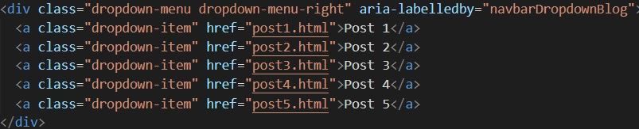
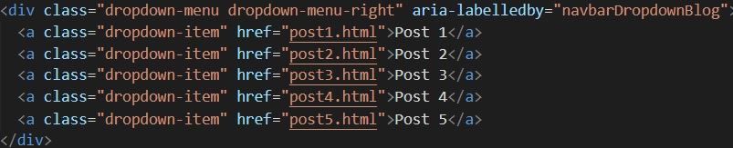

In order to make sure that this blog adheres to accessibility principles, I used Web Accessibility Evaluation Tool (WAVE) and Chrome’s Lighthouse tool to analyze this blog. Upon running these audits, I noticed a few red flags as well as some other smaller issues.
Note that WAVE detected several different issues. Lighthouse only picked up one error but still suggests that I manually check for others.First Steps: Fix the Biggest Error
My gut reaction was to fix the errors listed in red which point to WebAIM standard 2.4.4 which indicates that links should have some sort of indication as to what they are. My error was a result of empty social links in my footer as seen by the code below:
The footer contained empty links.It makes no sense to have empty links on a web page (it actually makes it more confusing for automated readers) so I can either get rid of that code snippet or add links. In order to fix this, I trimmed down the list and only kept the link to Github. I ran the report/audit again to see if this would remedy the error but there was no change. After some research, I found that I needed to add and "aria-label" within my "a-tag". After appending the code, the code passed the audit.
 Not only does the code look neater because I removed unnecessary lines, It
conforms to accessibility!
Not only does the code look neater because I removed unnecessary lines, It
conforms to accessibility!
Second Step: Fix a Non-Reported Error
The dropdown menu for blog posts, while technically having descriptive text, lacks any information regarding the posts.
 This dropdown only lists Post 1, Post 2, etc.

The HTML, while correct, could use some help.
This dropdown only lists Post 1, Post 2, etc.

The HTML, while correct, could use some help.
This is actually a very simple fix. All I needed to do was add the title of the blog post to the corresponding link. This change may be small but it will make a tremendous impact when screen readers need to comb through HTML in order to make sense of the navigation of the page. Like most of the changes to this blog, once you've done it on one page, you can just copy and paste into the rest as needed.
This dropdown now includes more informative link names. Small tweaks can make a huge impact in navigation.Third Step: Run more Reports and Audits!
I wanted to check on my progress so I ran WAVE and Lighthouse again. My results came back and they were good. I had fixed the major errors but even though Lighthouse gave me a perfect score, WAVE still indicated that I have a ways to go before this page is completely accessible. I'm happy with the progress I made and while it was similar to busy work in going to each HTML file to make the same changes, in the grand scheme of things, it's worth it.
I am out of the red (errors) but I still have a few things to address such as HTML, ARIA, and contrast. This page scored 100 but WAVE detected more issues that I will need to address.Conclusion
One thing that I had completely missed was that all my pages had the same title. Another easy fix as all I needed to do was add the correct title of the page (the name of the blog post) in the correct spot and another HTML structure issue down.
I think Bootstrap helps in accessibility in that it is easy to manage HTML files when the template is the same. Making changes is easy when you know where to look and where to append. It's also great that there are tools like WAVE and Lighthouse that are free and easy to use. WAVE is especially useful in that it links to a description/guideline of any issues that come up. For the most part, especially given that my content is a blog, it was easy to locate and implement and solutions. One thing that did trip me up was that the contrast errors. When I look at the page, I don't see an issue with the specific element that it points out but perhaps to some, it is an actual issue. This is something I will explore.